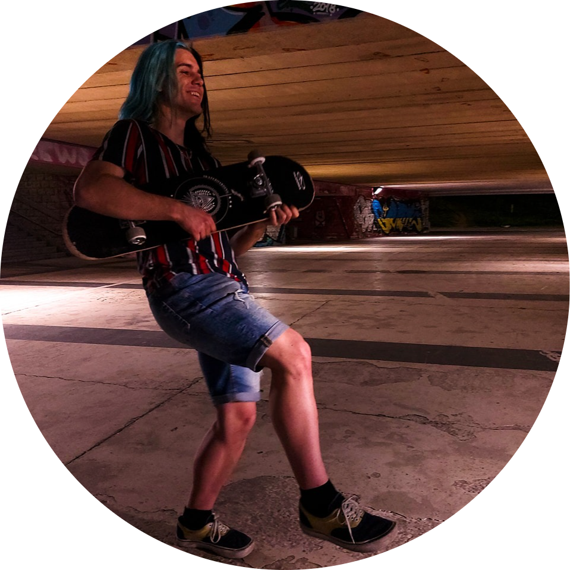
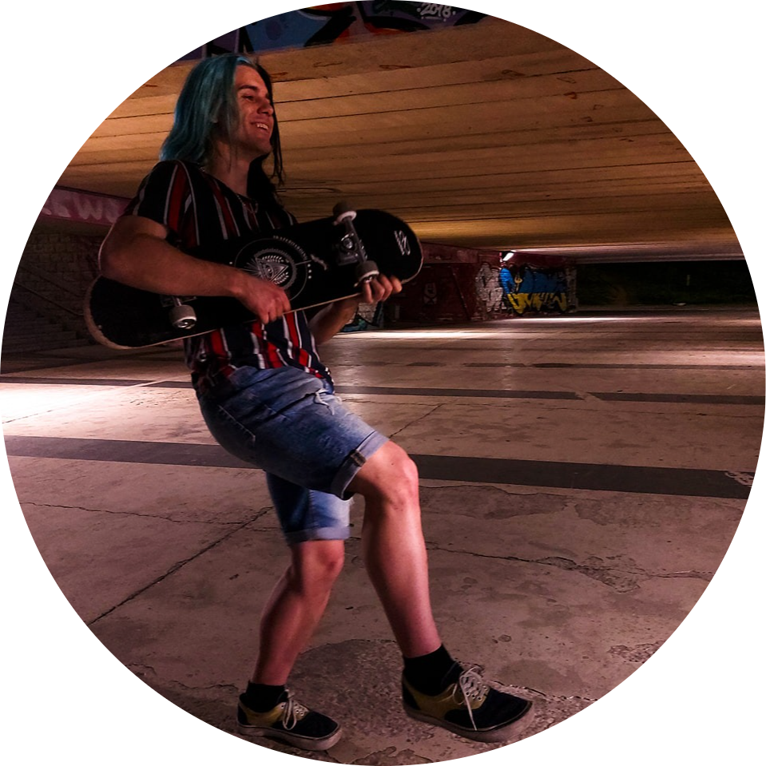

Krzysztof Juraszek
Student elektroniki na wydziale Elektronikii, Fotoniki i Mikrosystemów Politechniki Wrocławskiej
Doświadczenie Zawodowe
-
Comtrade (praktyka zawodowa), Bielsko-Biała
Październik 2018 - Listopad 2018
Firma Comtrade zajmuje się handlem sprzętu poleasingowego, takiego jak komputery, drukarki, laptopy itp. Odbyłem tam swoją praktykę zawodową w ramach technikum informatycznego Do moich obowiązków należały: My main responsibilities:
- Proste prace serwisowe (wymiana poszczególnych podzespołów w komputerach, laptopach oraz drukarkach)
- Czyszczenie sprzętu komputerowego oraz drukarek
- Kontrola jakości sprzętu zamówionego na magazyn
Edukacja
-
Politechnika Wrocławska
Październik 2021 - obecnie
-
Technik Informatyk, Zespół Szkół Technicznych i Handlowych im. Franciszka Kępki, Bielsko-Biała
Wrzesień 2017 - Czerwiec 2021
Kwalifikacje otrzymane po ukończeniu technikum:
- EE.09 ‑ Programowanie, tworzenie i administrowanie stronami internetowymi i bazami danych
- EE.08 ‑ Montaż i eksploatacja systemów komputerowych, urządzeń peryferyjnych i sieci
umiejętności
- Html - Zaawansowany
- CSS - Zaawansowany
- Bootstrap - Zaawansowany
- Web design - Ponad średnio zaawansowany
- Linux - Średnio zaawansowany
- C++ - Podstawowy
- C# - Podstawowy
- Chęć do nauki i samorozwoju
- Rozwiązywanie problemów
- Logiczne myślenie
- Otwartość na konstruktywną krytykę
Języki
- Polski - ojczysty
- Angielski - B2
W tej sekcji chciałem przybliżyć kim jestem na codzień, jakie są moje hobby i co lubię porabiać w wolnym czasie
Więc jestem Krzysztof, jestem z Polski
Oprócz web designu spędzam swój czas wolny chodząc na siłownie, jeżdżąc na deskorolce w cieplejsze dni.
Lubię także grać w gry komputerowe - moją ulubioną jest 'The Talos Principle'. Jestem także fanem Formuły 1,
staram się nie przegapiać żadnego wyścigu.
Jedną z najważniejszych rzeczy dla mnie jest samorozwój. Ciągle chcę uczyć się czegoś nowego.
Szlifować umiejętności, które już posiadam i zdobywać nowe. Dla przykładu zacząłem niedawno
uczyć się włoskiego. Jestem przekonany, że gdy będę umiał się nim posługiwać na satysfakcjonującym poziomie,
to na tym jednym języku się nie skończy. Będę chciał się uczyć kolejnych i kolejncyh. W końcu nauka, każdego
kolejnego języka będzie łatwiejsza, a pewnie tak samo satysfakcjonująca.
Myślę, że nie istnieje sufit dla samorozwoju. Zawsze możemy pójść o krok dalej